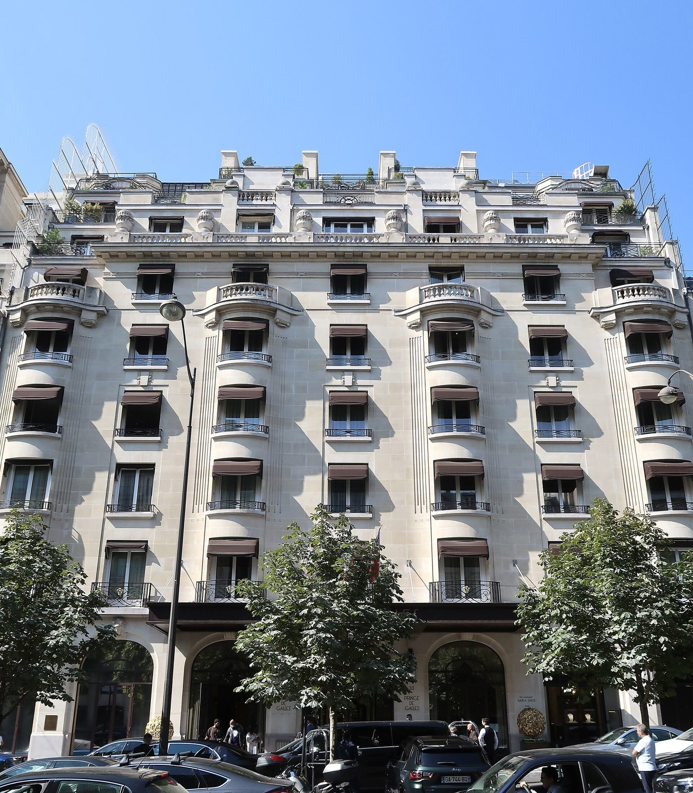
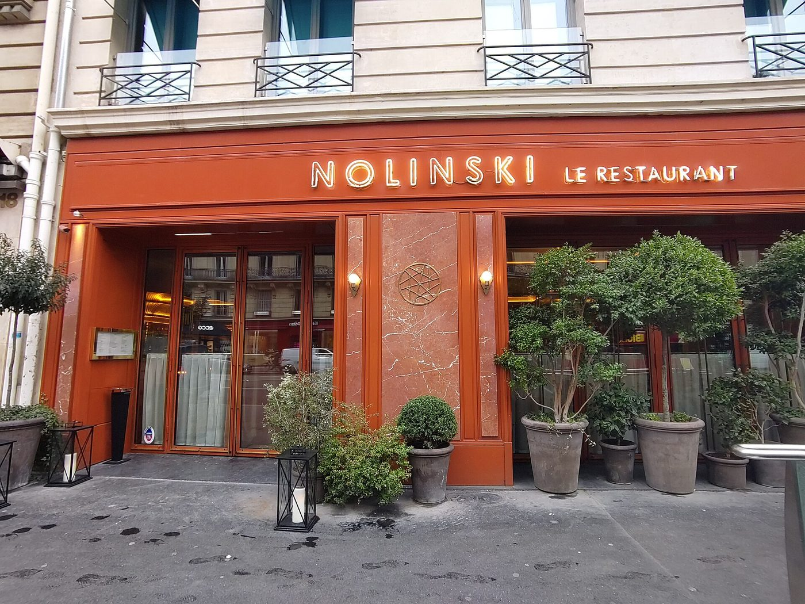
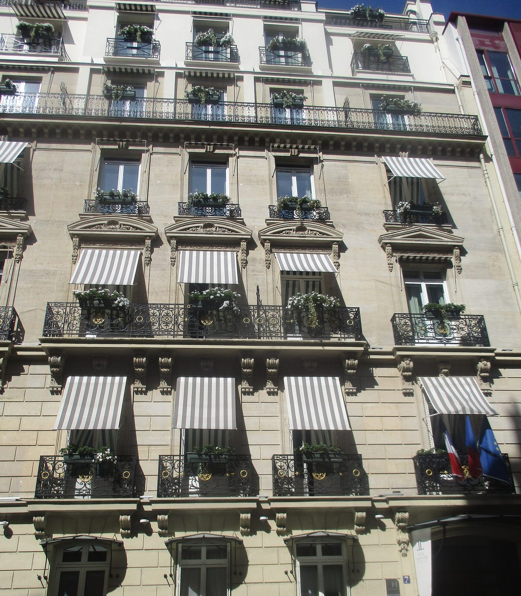

Les meilleurs hôtels de luxe à Paris : 19 adresses classées
Paris compte treize palaces officiels depuis juin 2026, davantage que toute autre ville au monde.
Nous en avons retenu dix, auxquels s'ajoutent neuf cinq étoiles de caractère. Classement,
tarifs relevés, et le défaut de chaque adresse.
Par Lucas Lecoq, rédacteur en chef✺Publié le 25 juillet 2026✺22 min de lecture
Le Bristol Paris, rue du Faubourg Saint-Honoré : premier de notre classement avec 9,6/10.
TL;DR : l'essentielLe podium parisien 2026
Le Bristol Paris, 9,6/10 :
l'art de vivre français dans sa version la plus discrète. Épicure et ses trois étoiles,
la seule piscine en teck de Paris, un service qui ne se fait jamais remarquer.
Le Meurice, 9,5/10 :
face aux Tuileries, le Paris classique sans compromis, avec la table
d'Alain Ducasse et ses deux étoiles.
Hôtel de Crillon, 9,4/10 :
place de la Concorde, le classicisme Louis XV réveillé par Tristan Auer.
Les deux mouvements de 2026 : le
Cheval Blanc Paris a décroché la distinction Palace
le 2 juin, tandis que le Mandarin Oriental Paris de la rue Saint-Honoré l'a perdue le même
jour. Il figure toujours dans ce classement, à la place qui est désormais la sienne :
première des cinq étoiles.
Palace ou 5 étoiles : la distinction que tout le monde confond
« Palace » n'est pas un synonyme haut de gamme de « cinq étoiles », c'est une
distinction officielle créée en 2010 et attribuée par Atout France pour trois
ans renouvelables. Elle s'ajoute au classement cinq étoiles et récompense une singularité :
l'histoire du lieu, la qualité du service, le rayonnement international. En juin 2026,
la France compte 33 établissements distingués, dont 13 à Paris.
Trois adresses parisiennes l'ont obtenue pour la première fois cette année : le Cheval Blanc
Paris, le Bvlgari Hôtel Paris et le Fouquet's Paris. Deux l'ont perdue : le Mandarin Oriental
Paris et le Park Hyatt Paris-Vendôme.
Et une absence qui intrigue : le Ritz Paris. Place Vendôme, il n'est pas
distingué Palace, non par manque de niveau, mais parce qu'il ne dépose pas de candidature.
La maison estime que son nom se suffit à lui-même. C'est défendable, et cela rappelle utilement
ce qu'est cette distinction : un label auquel on postule, pas un jugement absolu.
Notre périmètre : ce palmarès retient 10 des 13 palaces
parisiens. Les trois manquants, le Bvlgari, le Fouquet's et La Réserve Paris, n'ont pas
encore été visités par la rédaction : nous ne classons pas une adresse sur dossier. Ils entreront
dans l'édition suivante.
Le tableau : 19 adresses, scores et tarifs
Rang
Hôtel
Arr.
Statut
Score LMHS
Indice Prestige
Chambre dès
01
Le Bristol Paris
8e
Palace
9,6/10
5/5
~2 100 €
02
Le Meurice
1er
Palace
9,5/10
5/5
~1 000 €
03
Hôtel de Crillon
8e
Palace
9,4/10
5/5
~1 200 €
04
Four Seasons George V
8e
Palace
9,3/10
5/5
~1 300 €
05
Cheval Blanc Paris
1er
Palace
9,2/10
5/5
~2 050 €
06
Plaza Athénée
8e
Palace
9,1/10
5/5
~1 450 €
07
The Peninsula Paris
16e
Palace
8,9/10
4,5/5
~1 100 €
08
Shangri-La Paris
16e
Palace
8,8/10
4,5/5
~1 000 €
09
Mandarin Oriental Paris
1er
5 étoiles
8,7/10
4/5
~1 200 €
10
Mandarin Oriental Lutetia
6e
Palace
8,6/10
4,5/5
~1 080 €
11
Le Royal Monceau
8e
Palace
8,5/10
4,5/5
~950 €
12
Prince de Galles
8e
5 étoiles
8,4/10
4/5
~600 €
13
Hôtel Costes
1er
5 étoiles
8,3/10
4/5
~700 €
14
Nolinski Paris
1er
5 étoiles
8,2/10
4/5
~650 €
15
Hôtel Vernet
8e
5 étoiles
8,1/10
3,5/5
~450 €
16
Hôtel Lancaster
8e
5 étoiles
8,0/10
3,5/5
~550 €
17
Hôtel Brach
16e
5 étoiles
7,9/10
3,5/5
~500 €
18
Hôtel de Sers
8e
5 étoiles
7,8/10
3,5/5
~450 €
19
Hôtel Montalembert
7e
5 étoiles
7,7/10
3/5
~400 €
Lecture des tarifs : prix d'appel pour une chambre d'entrée de
gamme en basse saison, relevés en juillet 2026. Les tarifs des huit palaces déjà traités dans
notre comparatif des spas de palaces ont été recoupés
sur les moteurs de réservation officiels. Les autres sont des ordres de grandeur constatés, à
confirmer lors de nos prochaines visites. Un tarif sans date de relevé est une information morte :
en haute saison, comptez le double, parfois davantage.
Les 10 palaces de notre sélection
01
Le Bristol Paris 9,6/10
8e arrondissement, 112 rue du Faubourg Saint-Honoré, à deux pas du palais de l'Élysée.
Le Bristol ne cherche pas à impressionner, et c'est précisément ce qui le place en tête. Depuis 1925, ce palace règne sur le Faubourg Saint-Honoré avec une autorité si tranquille qu'on la remarque à peine. Les 188 chambres et suites parlent le vocabulaire du luxe suggéré : parquets en point de Hongrie, velours profonds, marbre, objets chinés plutôt qu'achetés en lot. Ce qui frappe d'abord, c'est le silence, résultat de murs épais et d'une isolation traitée comme une prestation à part entière.
La table : Épicure, trois étoiles Michelin, est désormais dirigé par Arnaud Faye, Meilleur Ouvrier de France, qui a succédé au printemps 2025 à Éric Frechon après vingt-cinq ans de règne. La transition s'est faite sans perdre une étoile, ce qui, à ce niveau, tient de l'exploit.
Le spa : 440 m² signés La Mer, et surtout la piscine en teck massif du sixième étage, chauffée à 28 °C, dessinée comme un pont de yacht avec vue sur les toits. Elle n'a pas d'équivalent à Paris.
Le bémol LMHS : c'est le tarif d'entrée le plus élevé du classement avec le Cheval Blanc, et la piscine, magnifique, reste modeste en dimensions. Les non-résidents accèdent aux soins dès 150 € mais pas aux installations.
8e arr. · 188 chambres et suites · Épicure 3 étoiles Michelin · Spa La Mer 440 m² · Piscine teck 28 °C · Dès ~2 100 €/nuit · Indice Prestige 5/5 ·
Sa fiche spa dans notre comparatif →
02
Le Meurice 9,5/10
1er arrondissement, 228 rue de Rivoli, face au jardin des Tuileries.
Si le Bristol est le palace de la discrétion, Le Meurice est celui de la position. Face aux Tuileries, à cinq minutes du Louvre, il occupe depuis 1835 l'une des adresses les plus enviées d'Europe. Les 160 chambres et suites jouent la carte Belle Époque assumée, moulures et cristal, que la rénovation menée par Philippe Starck a modernisée sans la trahir. Les salles de bains en marbre blanc sont des pièces à part entière, et certaines suites d'angle ouvrent sur les Tuileries comme sur un tableau.
La table : le restaurant Le Meurice Alain Ducasse, deux étoiles Michelin, où Amaury Bouhours signe la cuisine au quotidien depuis 2020 sous la direction de Ducasse. Le Bar 228, boiseries sombres et atmosphère feutrée, est l'un des plus beaux salons de la rive droite.
Le bémol LMHS : le spa Valmont, environ 340 m², est le point faible du dossier. Pas de piscine, pas d'espace aquatique, une offre de soins qui ne soutient pas la comparaison avec les palaces voisins. Pour un séjour orienté bien-être, ce n'est pas la bonne adresse.
1er arr. · 160 chambres et suites · Le Meurice Alain Ducasse 2 étoiles · Bar 228 · Spa Valmont ~340 m², sans piscine · Dès ~1 000 €/nuit · Indice Prestige 5/5 ·
Sa fiche spa dans notre comparatif →
03
Hôtel de Crillon, A Rosewood Hotel 9,4/10
8e arrondissement, 10 place de la Concorde.
Bâtiment de 1758 signé Ange-Jacques Gabriel, l'architecte de la place elle-même, le Crillon est le seul palace parisien à être aussi un monument historique de premier plan. Quatre années de travaux, achevées en 2017, ont permis un pari risqué : faire cohabiter le classicisme Louis XV et une audace contemporaine franche. Les 124 chambres et suites, signées Tristan Auer, mêlent dorures d'époque, mobilier dessiné sur mesure et art contemporain. Les Grands Appartements confiés à Karl Lagerfeld restent l'un des exercices de style les plus commentés de l'hôtellerie parisienne.
La table et le bar : L'Écrin pour la gastronomie, et surtout Les Ambassadeurs, ancienne salle de bal aux marbres et aux miroirs, devenue un bar dont le décor justifie à lui seul la visite.
Le spa : Sense, A Rosewood Spa, en partenariat avec Sisley, avec une piscine réservée aux résidents.
Le bémol LMHS : la place de la Concorde est un carrefour, pas un havre. Les chambres côté place profitent de la vue mais paient le prix du trafic, et l'accès à pied depuis les stations de métro se mérite. La surface du spa n'est pas communiquée par l'établissement, ce qui, à ce niveau de tarif, mériterait d'être corrigé.
8e arr. · 124 chambres et suites · Architecture 1758, Ange-Jacques Gabriel · Intérieurs Tristan Auer · Spa Sense by Sisley · Dès ~1 200 €/nuit · Indice Prestige 5/5 ·
Sa fiche spa dans notre comparatif →
04
Four Seasons Hotel George V 9,3/10
8e arrondissement, 31 avenue George V, au cœur du Triangle d'Or.
Le George V est le palace de la démonstration, et il l'assume. Trois restaurants étoilés sous un même toit : Le Cinq et ses trois étoiles, Le George et L'Orangerie avec une étoile chacun. Aucun autre hôtel européen n'affiche pareille concentration. Les 244 chambres et suites déroulent un Art déco somptueux, crème et ivoire, meubles d'époque et tissus lourds. Les compositions florales de Jeff Leatham, renouvelées chaque semaine dans le hall, sont devenues une signature visuelle identifiable dans le monde entier.
Le spa : 720 m², une piscine de 17 mètres, hammam, sauna et un fitness panoramique. La cour intérieure fleurie, invisible depuis la rue, est l'un des rares vrais silences du quartier.
Le bémol LMHS : c'est le palace le plus fréquenté de notre sélection, et cela se sent dans le hall aux heures de pointe. L'intimité n'est pas ce qu'on vient chercher ici. Le spa n'accueille les non-résidents que pour des soins, sans accès aux installations.
8e arr. · 244 chambres et suites · 3 restaurants étoilés dont Le Cinq (3 étoiles) · Spa 720 m² · Piscine 17 m · Dès ~1 300 €/nuit · Indice Prestige 5/5 ·
Sa fiche spa dans notre comparatif →
05
Cheval Blanc Paris 9,2/10
1er arrondissement, 8 quai du Louvre, dans l'immeuble de la Samaritaine.
Ouvert en septembre 2021, distingué Palace le 2 juin 2026, le Cheval Blanc est le plus jeune membre du club et sa proposition la plus contemporaine. Soixante-douze chambres et suites seulement, signées Peter Marino, toutes tournées vers la Seine, le Louvre ou les toits. À ce niveau de tarif, l'intimité est un argument, et c'est celui de la maison.
Le spa : le Dior Spa, 1 000 m², exclusivité mondiale, avec une piscine intérieure de 30 mètres, la plus grande d'Europe pour un hôtel, ses mosaïques artisanales et sa douche de neige. C'est le meilleur spa d'hôtel de Paris selon notre comparatif, sans discussion.
La table : Plénitude, trois étoiles Michelin, où Arnaud Donckele a transposé en cuisine parisienne le vocabulaire des sauces qui avait fait sa réputation à Saint-Tropez. La brasserie italienne Langosteria complète l'offre sur un registre volontairement plus détendu.
Le bémol LMHS : le rapport prix-expérience. C'est l'un des deux tarifs les plus élevés de Paris, et la piscine de 30 mètres, argument central de la maison, demeure fermée aux non-résidents. Notre enquête détaillée revient sur ce grand écart entre l'excellence du produit et son accessibilité.
1er arr. · 72 chambres et suites · Peter Marino · Plénitude 3 étoiles · Dior Spa 1 000 m² · Piscine 30 m · Dès ~2 050 €/nuit · Indice Prestige 5/5 ·
Lire notre enquête complète →
06
Hôtel Plaza Athénée 9,1/10
8e arrondissement, 25 avenue Montaigne.
Ouvert en 1913, le Plaza est le palace du glamour parisien, et sa façade aux géraniums rouges est probablement la plus photographiée de la ville. L'adresse, avenue Montaigne, entre Dior et Chanel, n'est pas un hasard : la maison a toujours vécu au rythme de la mode, et sa clientèle le lui rend bien. Les 208 chambres et suites soignent le détail, et quelques-unes ouvrent sur des terrasses privées avec la Tour Eiffel en fond.
La table :Jean Imbert pilote la cuisine depuis 2021, dans une salle où le décor Belle Époque a été restitué avec faste. Le bar du Plaza, rénové en 2025, reste l'un des rendez-vous les plus courus de la rive droite.
Le spa : le Dior Spa, 400 m², seul Dior Institut d'Europe, avec sa cabine de luminothérapie LED. Il accueille les non-résidents sur réservation de soin, dès 150 €.
Le bémol LMHS : pas de piscine, ce qui à ce niveau de tarif et face au George V ou au Cheval Blanc se remarque. L'avenue Montaigne est une adresse de prestige mais aussi un couloir touristique, et l'entrée de l'hôtel s'en ressent aux beaux jours.
8e arr. · 208 chambres et suites · Cuisine Jean Imbert · Dior Spa 400 m², sans piscine · Accès non-résidents dès 150 € · Dès ~1 450 €/nuit · Indice Prestige 5/5 ·
Sa fiche spa dans notre comparatif →
07
The Peninsula Paris 8,9/10
16e arrondissement, 19 avenue Kléber, à 200 mètres de l'Arc de Triomphe.
Installé dans un immeuble haussmannien de 1908 qui fut le Majestic, puis un centre de conférences internationales, le Peninsula a rouvert en 2014 après une restauration lourde. Les 200 chambres et suites sont les plus technologiques de notre sélection : tablettes de commande, éclairages scénarisés, service au doigt et à l'œil. On aime ou non, mais l'exécution est irréprochable.
Le point fort :L'Oiseau Blanc, le restaurant-terrasse du sixième étage, offre l'une des plus belles vues de Paris sur la Tour Eiffel. Peu de palaces parisiens disposent d'un rooftop de ce calibre, et c'est un vrai différenciateur.
Le bémol LMHS : l'avenue Kléber est une adresse de prestige mais le quartier s'endort tôt, et l'atmosphère générale de l'hôtel manque parfois de chaleur. Le luxe y est parfaitement exécuté, un peu moins incarné qu'au Bristol ou au Meurice.
16e arr. · 200 chambres et suites · Rooftop L'Oiseau Blanc, vue Tour Eiffel · Spa et piscine · Dès ~1 100 €/nuit · Indice Prestige 4,5/5
08
Shangri-La Paris 8,8/10
16e arrondissement, 10 avenue d'Iéna.
C'est l'ancienne résidence du prince Roland Bonaparte, construite en 1896, et cela se voit : hauteurs sous plafond considérables, boiseries classées, escalier d'apparat. Les 101 chambres et suites sont peu nombreuses pour un volume pareil, ce qui donne des surfaces généreuses. Une bonne partie d'entre elles offrent une vue frontale sur la Tour Eiffel, et c'est le meilleur argument de la maison : peu d'hôtels parisiens l'ont d'aussi près et d'aussi dégagé.
Le service, d'inspiration asiatique, est d'une précision remarquable, avec cette attention silencieuse qui fait la réputation du groupe hongkongais.
Le bémol LMHS : le quartier, très résidentiel, est mort le soir venu. Et la vue Eiffel, qui fait le prix de la chambre, dépend entièrement de la catégorie réservée : sans elle, l'expérience perd beaucoup de son sens.
16e arr. · 101 chambres et suites · Ancienne résidence du prince Roland Bonaparte, 1896 · Vue Tour Eiffel · Dès ~1 000 €/nuit · Indice Prestige 4,5/5
09
Mandarin Oriental Lutetia 8,6/10
6e arrondissement, 45 boulevard Raspail, Saint-Germain-des-Prés.
C'est le seul palace de la rive gauche, et cette singularité vaut mieux qu'un argument marketing : elle change la nature du séjour. Ouvert en 1910, passé sous pavillon Mandarin Oriental, le Lutetia porte une histoire lourde, celle des éditeurs et des écrivains du quartier, mais aussi celle de 1945, quand il accueillit les rescapés des camps. La rénovation de sept ans menée par Jean-Michel Wilmotte a dégagé les volumes et fait entrer la lumière sans effacer cette mémoire.
Le spa : Akasha, 700 m², avec une piscine de 17 mètres sous voûte. C'est l'un des rares vrais espaces aquatiques de la rive gauche.
Le bémol LMHS : le boulevard Raspail est passant et les chambres sur rue en pâtissent. L'accès au spa pour les non-résidents se fait sur demande, sans politique claire ni tarif public, ce qui est un manque à ce niveau.
6e arr. · Seul palace de la rive gauche · Rénovation Jean-Michel Wilmotte · Spa Akasha 700 m² · Piscine 17 m · Dès ~1 080 €/nuit · Indice Prestige 4,5/5 ·
Sa fiche spa dans notre comparatif →
10
Le Royal Monceau, Raffles Paris 8,5/10
8e arrondissement, 37 avenue Hoche, à 300 mètres de l'Arc de Triomphe.
Repensé de fond en comble par Philippe Starck en 2010, le Royal Monceau est le palace le moins palace de la liste, et c'est un compliment. Galerie d'art intégrée, librairie, salle de cinéma, guitares en libre accès dans les chambres : la maison cultive un esprit qui tranche avec le classicisme du quartier. Les 149 chambres et suites assument le geste contemporain jusqu'au bout.
Le spa : My Blend by Clarins, 1 500 m², avec une piscine de 23 mètres en marbre blanc, deux hammams, deux saunas et un laconium. Surtout, c'est le seul palace parisien à vendre un vrai accès journée, à 210 €, installations comprises. Pour qui veut goûter à un spa de palace sans y dormir, c'est l'adresse, et de loin.
Les tables :Il Carpaccio, une étoile Michelin, pour l'italien, et Matsuhisa Paris, première adresse française de Nobu Matsuhisa, pour le japonais-péruvien. Le second n'est pas étoilé, contrairement à ce qu'on lit souvent.
Le bémol LMHS : le parti pris Starck a quinze ans et commence à dater par endroits. L'avenue Hoche est calme mais sans charme particulier, et le rapport prix-prestation, sur la chambre seule, est moins évident que sur le spa.
8e arr. · 149 chambres et suites · Design Philippe Starck · Il Carpaccio 1 étoile · Spa My Blend 1 500 m² · Piscine 23 m · Journée spa 210 € · Dès ~950 €/nuit · Indice Prestige 4,5/5 ·
Sa fiche spa dans notre comparatif →
Les 9 cinq étoiles de caractère
Ces neuf adresses n'ont pas la distinction Palace, et pour la plupart ne la brigueront jamais :
trop petites, trop atypiques, ou simplement pas intéressées. Elles offrent en revanche ce que les
palaces peinent à donner, l'intimité, et des tarifs qui divisent la note par deux ou par trois.
11
Mandarin Oriental Paris 8,7/10
1er arrondissement, 251 rue Saint-Honoré.
Voici le dossier le plus discuté de l'année. Le 2 juin 2026, le Mandarin Oriental Paris a perdu sa distinction Palace, obtenue en 2011. L'établissement n'a pourtant pas changé : 138 chambres et suites d'un contemporain raffiné, l'un des plus grands spas de Paris avec 900 m², une piscine, et le restaurant Camélia. Le jardin intérieur, invisible de la rue Saint-Honoré, reste l'un des plus beaux secrets du quartier.
Ce déclassement dit surtout la sévérité du renouvellement triennal, et la concurrence nouvelle du Cheval Blanc, du Bvlgari et du Fouquet's. Sur le terrain, la maison reste largement au niveau de plusieurs palaces de cette liste, et son spa devance nettement celui du Meurice.
Le bémol LMHS : les tarifs sont restés ceux d'un palace alors que la distinction ne l'accompagne plus, ce qui pose une vraie question de positionnement pour la saison qui vient. L'architecture, réussie, manque du supplément d'âme des maisons centenaires.
1er arr. · 138 chambres et suites · Spa 900 m² avec piscine · Restaurant Camélia · A perdu la distinction Palace en juin 2026 · Dès ~1 200 €/nuit · Indice Prestige 4/5
12

Prince de Galles 8,4/10
8e arrondissement, 33 avenue George V, mur à mur avec le Four Seasons.
Ouvert en 1928, le Prince de Galles est l'un des plus purs témoignages Art déco de l'hôtellerie parisienne. Son patio mosaïque, classé, est une pièce d'anthologie que la rénovation de 2013 a heureusement respectée. Les 159 chambres et suites déclinent le vocabulaire des années trente sans tomber dans la reconstitution.
Voisin immédiat du George V, il en propose une version plus intime et sensiblement moins chère, ce qui en fait l'un des meilleurs rapports prestige-prix du Triangle d'Or.
Le bémol LMHS : la comparaison permanente avec le voisin est cruelle sur la restauration et le spa, nettement en retrait. Et l'avenue George V, aux beaux jours, est tout sauf paisible.
8e arr. · 159 chambres et suites · Art déco 1928 · Patio mosaïque classé · Dès ~600 €/nuit · Indice Prestige 4/5
13
Hôtel Costes 8,3/10
1er arrondissement, 239 rue Saint-Honoré.
Le Costes n'est pas un hôtel, c'est un décor, et il l'a été avant tout le monde. Ouvert en 1995, signé Jacques Garcia, il a inventé une esthétique, velours pourpres, lumière basse, Second Empire théâtral, que le monde entier a copiée depuis. Le patio à l'italienne reste l'une des tables les plus regardées de Paris, et la compilation musicale maison est devenue un objet culturel à part entière.
Le bémol LMHS : le service peut être distant, voire sélectif, et l'établissement l'assume. Trente ans après, le décor a des allures de pièce de musée, et le rapport prix-prestation se justifie surtout par l'adresse et l'atmosphère, moins par la chambre elle-même.
1er arr. · Décor Jacques Garcia · Ouvert en 1995 · Patio à l'italienne · Dès ~700 €/nuit · Indice Prestige 4/5
14

Nolinski Paris 8,2/10
1er arrondissement, 16 avenue de l'Opéra.
Premier hôtel du groupe Evok, le Nolinski a été confié à Jean-Louis Deniot, et c'est ce qui en fait le prix. Les 45 chambres sont pensées comme des appartements privés : camaïeux de gris, bétons cirés, velours, miroirs géométriques. Le résultat est l'un des intérieurs les plus aboutis de l'hôtellerie parisienne récente, entre faste haussmannien et rigueur contemporaine. La position, entre le Louvre et l'Opéra Garnier, est difficile à battre pour un premier séjour.
Le bémol LMHS : l'avenue de l'Opéra est bruyante et sans grâce au niveau du trottoir. Avec 45 clés seulement, les services annexes restent limités par rapport à un grand cinq étoiles.
1er arr. · 45 chambres et suites · Intérieurs Jean-Louis Deniot · Groupe Evok · Spa · Dès ~650 €/nuit · Indice Prestige 4/5
15
Hôtel Vernet 8,1/10
8e arrondissement, 25 rue Vernet, à une rue de l'Arc de Triomphe.
Le Vernet possède un argument qu'aucun palace ne peut lui reprendre : sa salle à manger est coiffée d'une verrière dessinée par Gustave Eiffel. On y déjeune sous une structure de 1913 dont le dessin, à lui seul, vaut le détour. Les 50 chambres et suites, rénovées, sont d'un contemporain sobre, et plusieurs ouvrent sur un balcon meublé donnant sur les toits.
Le bémol LMHS : hors de la verrière, l'établissement est un bon cinq étoiles sans signature forte. Le rapport prix-prestation devient discutable dès qu'on quitte les catégories supérieures.
8e arr. · 50 chambres et suites · Verrière Gustave Eiffel · Triangle d'Or · Dès ~450 €/nuit · Indice Prestige 3,5/5
16

Hôtel Lancaster 8,0/10
8e arrondissement, 7 rue de Berri, à 50 mètres des Champs-Élysées.
Ancien hôtel particulier de 1889, le Lancaster a conservé ce que les Champs-Élysées ont perdu : le calme. Ses 44 chambres s'organisent autour d'un jardin intérieur d'inspiration japonaise, véritable pièce de l'hôtel et non simple ornement. Marlene Dietrich y a vécu trois ans, et la suite qui porte son nom entretient la légende sans en faire trop. La rénovation menée par le studio Jean-Philippe Nuel a réussi le mélange entre architecture 1900 et mobilier ancien.
Le bémol LMHS : pas de spa digne de ce nom ni d'espace aquatique. La rue de Berri est calme mais l'environnement immédiat des Champs-Élysées reste ce qu'il est.
8e arr. · 44 chambres et suites · Hôtel particulier 1889 · Jardin japonais intérieur · Suite Marlene Dietrich · Dès ~550 €/nuit · Indice Prestige 3,5/5
17
Hôtel Brach 7,9/10
16e arrondissement, 1-7 rue Jean Richepin.
Un ancien centre de tri postal des années 1970 transformé par Philippe Starck en 7 000 m² de lifestyle assumé. Le Brach est l'adresse la moins conventionnelle de cette liste : restaurant méditerranéen, pâtisserie, potager et poulailler sur le toit, et surtout un club de sport avec piscine de 22 mètres ouverte 24 heures sur 24, chose rarissime à Paris. Les 59 chambres puisent dans le modernisme des années trente, avec cuir, bois et matières brutes.
Le bémol LMHS : le 16e arrondissement est loin de tout ce qui fait le Paris des visiteurs, et l'établissement s'adresse d'abord à une clientèle locale. Le parti pris esthétique, très marqué, ne fera pas l'unanimité.
16e arr. · 59 chambres et suites · Design Philippe Starck · 7 000 m² · Piscine 22 m ouverte 24h/24 · Rooftop potager · Dès ~500 €/nuit · Indice Prestige 3,5/5
18
Hôtel de Sers 7,8/10
8e arrondissement, 41 avenue Pierre 1er de Serbie.
Construit en 1880 pour le marquis de Sers par l'architecte Jules Pellechet, l'établissement est surnommé le « baby palace » du Triangle d'Or, et le raccourci n'est pas usurpé. On y entre par un escalier monumental en marbre blanc bordé d'un sol en damier, avec une galerie de portraits d'ancêtres qui a survécu à la conversion menée en 2004. Les 52 chambres jouent le luxe suggéré : parquets en point de Hongrie, étoffes, quelques pièces d'art.
Le bémol LMHS : les chambres d'entrée de gamme sont petites, ce qui est fréquent dans les immeubles de cette époque mais se paie ici au tarif du quartier. L'offre de restauration reste modeste.
8e arr. · 52 chambres et suites · Hôtel particulier 1880, Jules Pellechet · Galerie des portraits · Dès ~450 €/nuit · Indice Prestige 3,5/5
19
Hôtel Montalembert 7,7/10
7e arrondissement, 3 rue de Montalembert, à côté de la rue du Bac.
Ouvert en 1926, le Montalembert revendique le titre de premier boutique-hôtel parisien, et il a surtout été le quartier général de l'édition de la rive gauche : Gallimard est à cent mètres, et les salons ont vu passer des générations d'écrivains. Les 50 chambres cultivent le détail, parquets sombres, bibliothèques garnies d'ouvrages anciens, téléviseurs dissimulés derrière des cadres. Les suites des derniers étages offrent un face-à-face avec la Tour Eiffel par-dessus les toits de zinc.
Le bémol LMHS : c'est le score le plus bas de notre sélection, et l'établissement paie ici sa taille et l'absence d'équipements. Le spa minéral ajouté en 2024 est agréable mais reste très compact.
7e arr. · 50 chambres et suites · Ouvert en 1926 · Saint-Germain-des-Prés · Vue Tour Eiffel depuis les suites · Dès ~400 €/nuit · Indice Prestige 3/5
Notre méthode et nos deux indices
Ce palmarès applique la grille LMHS Destination, notée sur 10, celle que nous
réservons aux classements par ville. Elle pondère cinq critères : rapport qualité-prix 25 %,
critère thématique 25 %, localisation 20 %, service 20 %, avis clients vérifiés 10 %. Pour cette
sélection, le critère thématique est le prestige et l'art de vivre : qualité des
matières, cohérence du décor, profondeur de la restauration et du spa, singularité de la maison.
Ne convertissez pas nos notes. Une note sur 10 issue de la grille
Destination et une note sur 20 issue du Protocole LMHS ne mesurent pas la même chose et ne
reposent pas sur le même niveau de preuve. Un même hôtel peut légitimement porter les deux, avec
des valeurs différentes. Le détail figure sur notre page méthode.
L'Indice Prestige Paris, sur 5
C'est notre indicateur propriétaire pour cette sélection. Il mesure le prestige réel de
l'adresse, indépendamment du confort : distinction Palace en vigueur, ancienneté et
histoire de la maison, qualité de l'emplacement, rayonnement international. Il explique pourquoi
deux hôtels au confort voisin peuvent afficher un écart d'un point et demi. Il évolue :
le Cheval Blanc y a gagné un demi-point en juin 2026 avec sa distinction, le Mandarin Oriental
Paris en a perdu autant.
Quel palace pour quel séjour
Premier séjour à Paris : le Meurice, pour la position
face aux Tuileries qui met le Louvre, la Concorde et Saint-Germain à distance de marche.
Le Bristol si le budget suit et que le calme prime.
Séjour bien-être : le Cheval Blanc pour la
piscine de 30 mètres, ou le Royal Monceau qui est le seul à vendre
une journée de spa complète, à 210 €, sans y dormir. À éviter dans ce cas : le Meurice
et le Plaza, sans espace aquatique.
Voyage d'affaires : le Meurice ou le
Bristol, centraux et dotés de vraies conciergeries Clefs d'Or.
Budget maîtrisé : le Vernet ou l'
Hôtel de Sers mettent le Triangle d'Or à portée pour le tiers du tarif d'un
palace voisin. Et nos hôtels 4 étoiles
descendent encore d'un cran sans quitter le centre.
19 adresses classées10 palaces sur les 13 de ParisGrille Destination · /10Indice Prestige Paris · /50 partenariat rémunéré
Questions fréquentes
Quelle est la différence entre un palace et un hôtel 5 étoiles ?
Le classement cinq étoiles évalue des équipements et des services selon une grille
d'État. La distinction Palace, créée en 2010 et attribuée par Atout France, s'y ajoute
pour un nombre volontairement restreint d'établissements, sur des critères de singularité :
histoire du lieu, excellence du service, rayonnement international. Elle est accordée pour
trois ans et se perd : en juin 2026, quatre établissements français l'ont perdue, dont deux
parisiens. Paris compte 13 palaces, ce palmarès en retient 10.
Quel est le meilleur hôtel de luxe à Paris en 2026 ?
Le Bristol Paris, avec 9,6/10 à la grille LMHS Destination et un Indice Prestige de 5/5.
Il doit sa première place à la combinaison la plus équilibrée de la capitale : Épicure et ses
trois étoiles Michelin sous la direction d'Arnaud Faye, la seule piscine en teck de Paris, et
un service qui ne se fait jamais remarquer. Le Meurice (9,5/10) et l'Hôtel de Crillon (9,4/10)
complètent le podium.
Combien coûte une nuit dans un palace parisien ?
Comptez de 950 à 2 100 € pour une chambre d'entrée de gamme en basse saison, selon nos relevés
de juillet 2026 : le Royal Monceau ouvre la fourchette à environ 950 €, le Bristol et le Cheval
Blanc la ferment autour de 2 050 à 2 100 €. En haute saison, ces tarifs doublent couramment.
Les cinq étoiles de caractère de ce classement démarrent entre 400 et 700 €, soit deux à trois
fois moins pour une localisation souvent identique.
Peut-on profiter du spa d'un palace sans y dormir ?
Rarement dans son intégralité. Un seul palace parisien vend un accès journée complet,
installations comprises : le Royal Monceau, à 210 €. Le Plaza Athénée, Le Bristol et Le Meurice
accueillent les non-résidents pour des soins, à partir de 150 à 160 €, mais sans accès aux
espaces aquatiques. Au Cheval Blanc, l'espace détente est accessible à 60 €, la piscine de
30 mètres restant réservée aux résidents. Le détail figure dans notre
comparatif des spas de palaces parisiens.
Pourquoi le Ritz Paris n'est-il pas dans ce classement ?
Parce que le Ritz ne porte pas la distinction Palace : la maison ne dépose pas de candidature,
estimant que sa notoriété se passe de label. Ce n'est donc ni un oubli ni un jugement sur sa
qualité. Nous classons ici les palaces distingués et les cinq étoiles que nous avons visités ;
le Ritz fera l'objet d'un traitement séparé.
Quels palaces parisiens manquent à ce palmarès ?
Trois, tous distingués en 2026 : le Bvlgari Hôtel Paris, le Fouquet's Paris et La Réserve
Paris. Nous ne les avons pas encore visités, et notre règle est de ne pas classer une adresse
sur dossier. Ils rejoindront l'édition suivante.